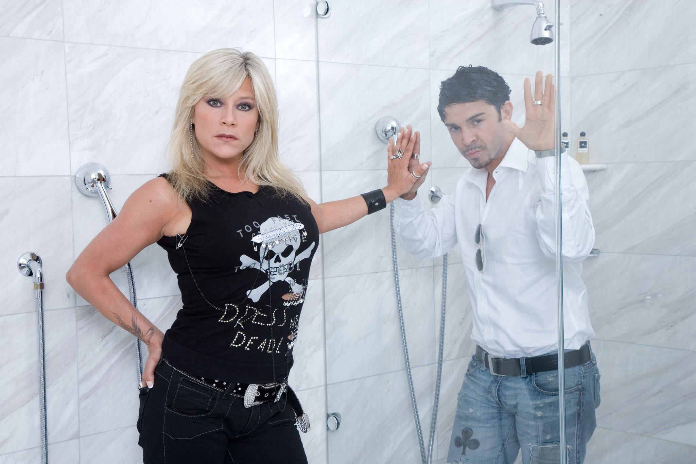
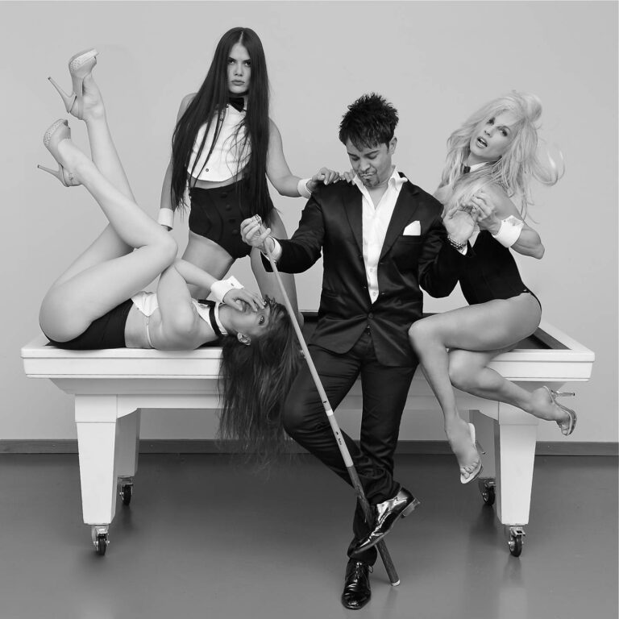
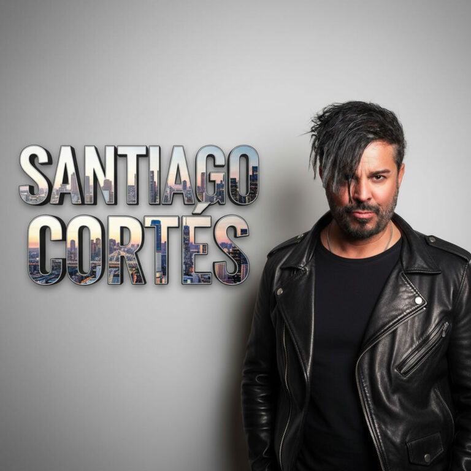
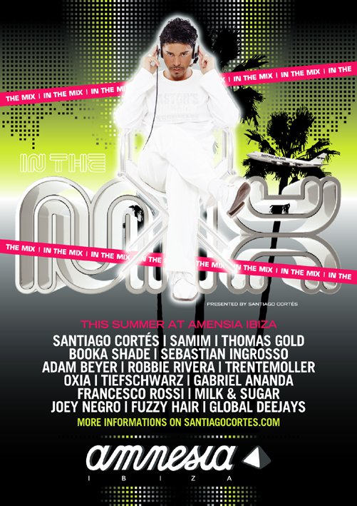
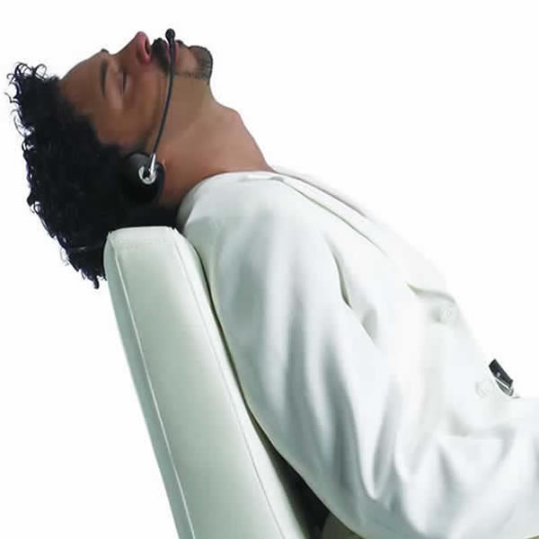
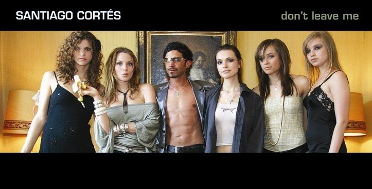

Santiago Cortes Live
About Santiago Cortes
Santiago Cortes is a Swiss DJ and music producer.
The expertise that Santiago Cortes brought to the track comes from working with artists like Samantha Fox and endless collaborations with artists such as remixes by John Dahlbäck, Robbie Rivera, Claudio Coccoluto, Sarah Main and DJ Colleen Shannon.
Discover official music, videos, press photos and exclusive content.
Santiago Cortes Official Photo Gallery






